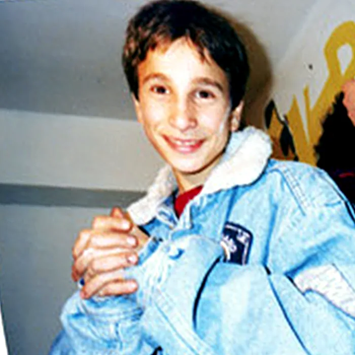
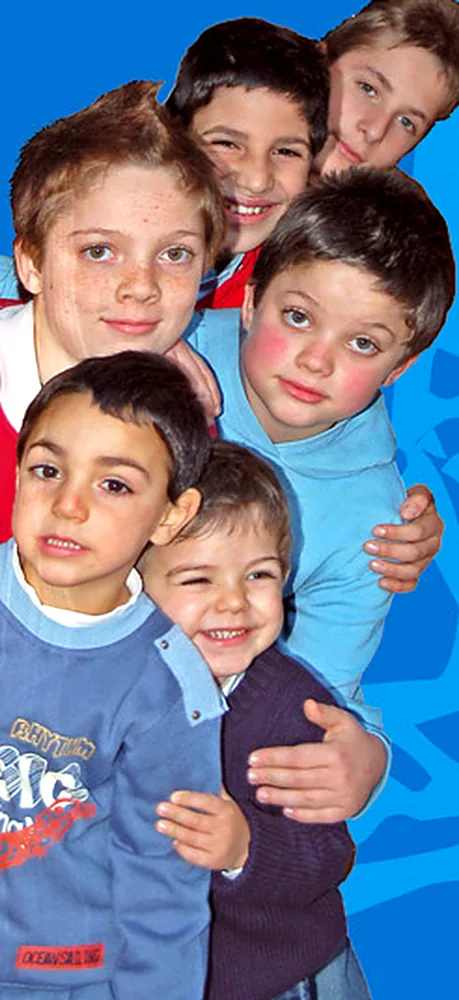
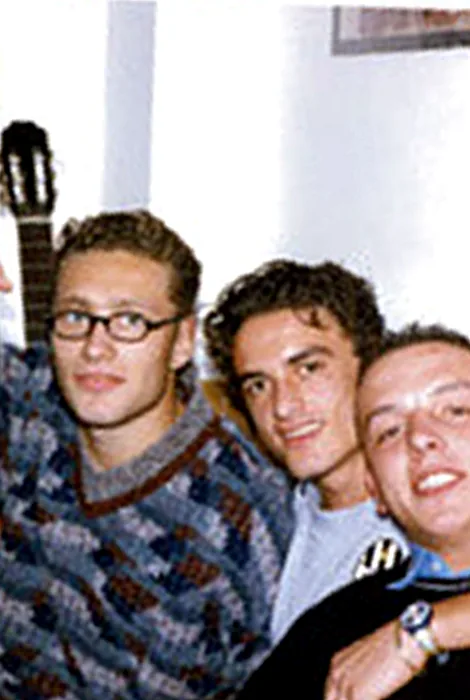
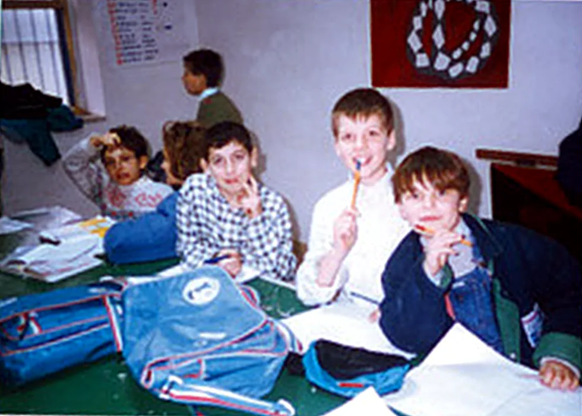

Il giorno in cui è nato Campo dei Fiori
La storia di Campo dei Fiori ha inizio nel 1991, quando il gruppo scout Agesci di Nola decise di svolgere attività di volontariato nel quartiere Gescal della città. È anche vero che dai documenti risulta che la costituzione dell'associazione Campo dei Fiori avvenne il 22 ottobre del 1993.
C'è tuttavia un giorno ben preciso da cui far partire in modo certo la nostra avventura. Quel giorno, di mattina, eravamo impegnati come volontari in piazza d'Armi per la venuta del Papa. Nel pomeriggio portavamo i ragazzi della Gescal alla loro prima attività di campeggio, con pernottamento a Castel Cicala: eravamo molto soddisfatti, era il risultato di un lavoro cominciato molti mesi prima. In serata un amico ci portò la notizia dell'attentato a Giovanni Falcone.
Ecco le radici di Campo dei Fiori: impegno civile e solidarietà come lotta alla malavita e al degrado del nostro territorio. Quel giorno la Storia del nostro Paese si intrecciò con i nostri piccoli impegni quotidiani. Era il 23 maggio 1992: nasce Campo dei Fiori.



